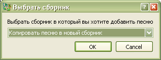

3.3 Копирование песен
Софт Проектор позволяет копировать песню в новый или уже существующий сборник.
Для копирования песни:
Горячие клавиши: Crtl+C

Если вы не желаете скопировать песню в существующий сборник,
выберите опцию создать новый сборник. Подробнее — здесь.
Выберите нужный сборник и песню. После этого — выберите опцию "Правка" и подпункт
Редактировать песню. После завершения правки нажмите на кнопку "Сохранить"